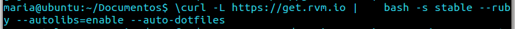
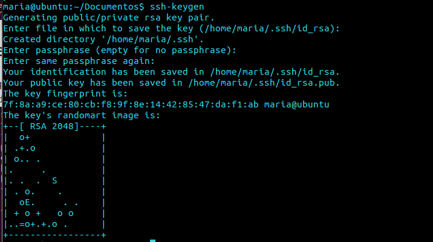
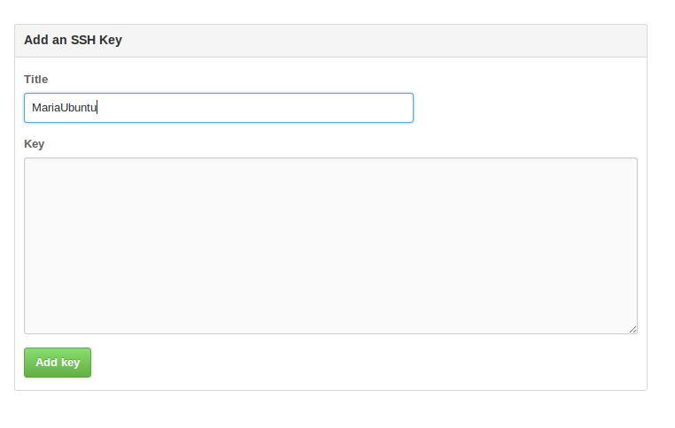

Instalamos rvm utilizando el siguiente comando: ```sh \curl -L https://get.rvm.io | bash -s stable –ruby –autolibs=enable –auto-dotfiles
``` 
Ya tenemos instalado git, ahora lo que hacemos es generar una clave publica para sincronizar nuestro PC con la cuenta de GitHub:  Ahora añadimos dicha clave a la cuenta de GitHub. 